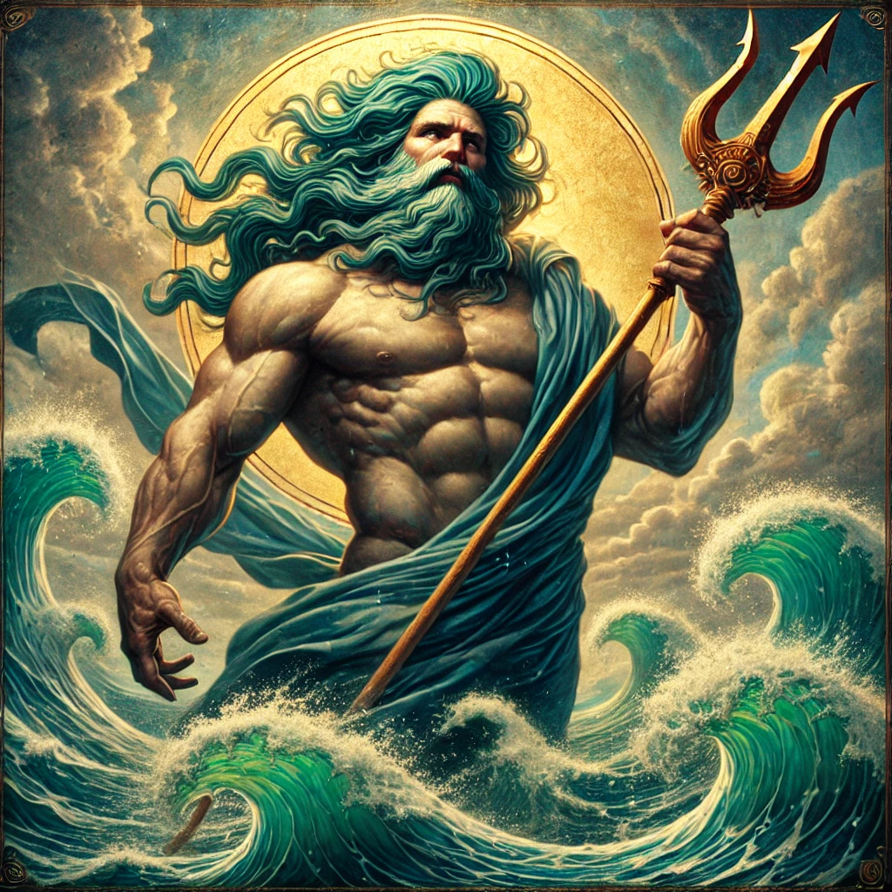

<!DOCTYPE html>
<html lang="en">
<head>
    <meta charset="UTF-8">
    <meta name="viewport" content="width=device-width, initial-scale=1.0">
    <title>Dionysus - Greek Mythology with Mr. Sovocool</title>
    <style>
        body {
            font-family: Arial, sans-serif;
            margin: 0;
            padding: 0;
            background-image: url('background.webp');
            background-size: cover;
            background-attachment: fixed;
            background-position: center;
            background-repeat: no-repeat;
            color: white;
        }
        .header-banner {
            background-color: rgba(0, 0, 139, 0.8);
            width: 100%;
            text-align: center;
            padding: 20px 0;
            position: relative;
        }
        .header-banner img {
            max-width: 60%;
            height: auto;
        }
        .container {
            padding: 20px;
            background-color: rgba(0, 0, 0, 0.75);
            margin: 20px;
            border-radius: 10px;
            text-align: center;
        }
        .container h1 {
            color: yellow;
            font-size: 40px;
        }
        .container h3 {
            font-size: 22px;
            font-style: italic;
            font-weight: normal;
            color: white;
        }
        .container p {
            text-align: left;
            font-size: 20px;
            margin: 10px 0;
        }
        .container p strong {
            color: yellow;
        }
        .container p em {
            font-style: italic;
            color: white;
        }
        .god-image {
            width: 50%;
            max-width: 400px;
            border-radius: 10px;
        }
        .grid {
            display: grid;
            grid-template-columns: repeat(5, 1fr);
            gap: 20px;
            max-width: 900px;
            margin: 0 auto;
        }
        .grid a {
            text-decoration: none;
            color: white;
            font-size: 18px;
            font-weight: bold;
            display: flex;
            flex-direction: column;
            align-items: center;
            justify-content: center;
            position: relative;
            border-radius: 10px;
            overflow: hidden;
        }
        .grid img {
            width: 100%;
            height: auto;
            border-radius: 10px;
        }
        .grid span {
            position: absolute;
            bottom: 10px;
            background-color: rgba(0, 0, 0, 0.6);
            color: white;
            padding: 5px 10px;
            border-radius: 5px;
        }
    </style>
</head>
<body>
    <div class="header-banner">
        
    </div>
    <div class="container">
        <h1>Dionysus</h1>
        <h3>God of Wine, Festivity, Madness, and Theatre</h3>
        
        
	<p><strong>Roman Name:</strong> <em>Bacchus</em></p>        
	<p><strong>Parents:</strong> <em>Zeus and Semele</em></p>
        <p><strong>Spouse(s):</strong> <em>Ariadne</em></p>
        <p><strong>Siblings:</strong> <em>Ares, Athena, Apollo, Artemis, and Hermes (half-siblings fathered by Zeus)</em></p>
        <p><strong>Children:</strong> <em>Priapus, Hymen, Thoas, Staphylus</em></p>
<p><strong>Note:</strong> <em>Dionysus is not considered an original Olympian. In some myths, he replaces Hestia as one of the twelve. In others, Hestia is still acknowledged.</em></p>
        <br>
        <p>Dionysus is the Greek god of wine, celebration, and theater. He was the son of Zeus, the king of the gods, and Semele, a mortal princess. His birth was unusual—before he was born, Zeus saved him by sewing him into his thigh after Semele died due to a trick by Hera. This made Dionysus unique as the only Olympian with a mortal parent.</p> <p>As he grew up, Dionysus traveled far and wide, teaching people how to make wine. He was often followed by a lively group of satyrs and Maenads, wild women who worshiped him with dancing and singing. Dionysus brought joy and madness, depending on how he was treated. Those who welcomed him enjoyed his gifts, while those who rejected him often faced strange punishments, like being turned into dolphins or driven insane.</p> <p>Dionysus was also known for his connection to theater. Festivals in his honor featured performances that became the foundation of Greek drama. His symbols included grapevines, ivy, and the thyrsus, a staff topped with a pinecone. Though he loved fun and celebration, he could also be dangerous when angered. Dionysus was married to Ariadne, a mortal princess he made immortal. His worship was full of music, dance, and wild energy, making him one of the most beloved gods in Greek mythology.</p>
        <br>
      <p><strong style="color: yellow;">Notable Stories About Dionysus:</strong></p>
        <ul style="text-align: left; font-size: 20px; list-style-type: none; padding-left: 40px;">
            <li><a href="#story1" style="color: white; text-decoration: underline; font-weight: normal;">The Birth of Dionysus</a></li>
            <li><a href="#story2" style="color: white; text-decoration: underline; font-weight: normal;">Dionysus and the Pirates</a></li>
            <li><a href="#story3" style="color: white; text-decoration: underline; font-weight: normal;">King Pentheus and the Maenads</a></li>
            <li><a href="#story4" style="color: white; text-decoration: underline; font-weight: normal;">The Rescue of Ariadne</a></li>
            <li><a href="#story5" style="color: white; text-decoration: underline; font-weight: normal;">Midas’ Golden Touch</a></li>    
        </ul>
      <br>  
      <h2 id="story1" style="color: yellow; font-weight: bold; text-align: center;">The Birth of Dionysus</h2>
        <p>Dionysus, the god of wine, had an unusual and dramatic birth. His mother was Semele, a mortal princess of Thebes, and his father was Zeus, the king of the gods. When Hera, Zeus’s jealous wife, learned of the affair, she became furious. She disguised herself as an old woman and visited Semele, planting doubt in her mind. "If Zeus truly loves you," she whispered, "ask him to reveal himself in all his godly power, as he does to Hera."</p> <p>Semele, eager to see Zeus in his full glory, made him swear an unbreakable oath to grant her any request. When she asked him to appear as a god, Zeus knew it would be dangerous, but he had no choice. He revealed his true form, surrounded by lightning and divine fire. The powerful energy was too much for the mortal Semele, and she was burned to ashes. However, before she perished, Zeus saved their unborn child.</p> <p>To keep the baby safe, Zeus sewed him into his own thigh until he was ready to be born. When the time came, Dionysus emerged, fully formed and alive. Because of this unusual birth, he was called “twice-born.” To protect him from Hera’s wrath, Zeus sent him to be raised by nymphs and hidden away. Dionysus would grow up to become the god of wine, joy, and revelry, forever tied to both the mortal and divine worlds.</p>

      <br>  
      <h2 id="story2" style="color: yellow; font-weight: bold; text-align: center;">Dionysus and the Pirates</h2>
        <p>One day, Dionysus was walking along the shore, appearing as a handsome young man dressed in a purple cloak. A group of pirates sailing nearby spotted him and, thinking he was a rich prince, decided to capture him. They dragged him onto their ship, believing they could ransom him for gold.</p> <p>As the pirates tied him up, something strange happened—the ropes fell off as if they had never been tied. The sailors were confused, but their captain ignored the warning and ordered them to set sail. Suddenly, wine began to flow across the deck, filling the air with its sweet scent. Vines sprouted from the mast, winding around the ship and covering it in ivy. The crew panicked, realizing that their prisoner was no ordinary man.</p> <p>Dionysus then revealed his divine power. He transformed into a roaring lion, his eyes blazing with fury. A great bear appeared beside him, sending the terrified pirates into chaos. In their fear, they jumped overboard, but instead of drowning, they were turned into dolphins. Only one sailor, the helmsman, had tried to stop the kidnapping, and Dionysus spared him, granting him safety.</p> <p>From that day on, the dolphins were said to be followers of Dionysus, forever roaming the seas. The god continued his journey, bringing wine and celebration wherever he went, always reminding people to respect the power of the gods.</p>
        <br>
          <h2 id="story3" style="color: yellow; font-weight: bold; text-align: center;">King Pentheus and the Maenads</h2>
        <p>King Pentheus of Thebes did not believe in the power of Dionysus. When the god arrived in his city, spreading the joy of wine and celebration, Pentheus refused to accept him as a true deity. He was disgusted by the wild festivals of Dionysus’s followers, the Maenads, who danced and sang in a frenzy on the mountainside. Angry at their behavior, he ordered his guards to arrest Dionysus and stop the madness.</p> <p>Disguised as a mortal, Dionysus allowed himself to be captured, but no prison could hold a god. Mysteriously, the palace shook, and the doors burst open by themselves. Dionysus was free. He warned Pentheus to respect him, but the stubborn king refused to listen. Instead, he became curious about the Maenads and their wild rituals. Dionysus, seeing an opportunity to teach him a lesson, tricked Pentheus into disguising himself as a woman so he could spy on them unnoticed.</p> <p>Once dressed in women’s clothing, Pentheus made his way to the mountains, eager to see the secret celebrations. But Dionysus clouded his mind, making him believe he was invisible, when in reality, the Maenads saw him immediately. Mistaking him for a wild animal, they attacked in their frenzy. Even his own mother, Agave, was caught in the madness. She grabbed him, believing he was a lion, and led the others in tearing him apart.</p> <p>When the madness faded, Agave realized, to her horror, that she had killed her own son. Dionysus had punished Pentheus not out of cruelty, but to show the dangers of resisting the gods. From that day on, Thebes learned to respect Dionysus and his power, understanding that joy and chaos were two sides of the same coin.</p>
      <br>  
      <h2 id="story4" style="color: yellow; font-weight: bold; text-align: center;">The Rescue of Ariadne</h2>
        <p>Ariadne, the princess of Crete, had once helped the hero Theseus escape from the deadly Labyrinth by giving him a ball of thread to find his way out. In return, Theseus promised to take her away and marry her. However, after they sailed from Crete, he abandoned her while she slept on the island of Naxos. When she woke up and found herself alone, she was heartbroken.</p> <p>As Ariadne wept, Dionysus happened to be passing through the island. He saw her sorrow and was moved by her beauty and kindness. Approaching gently, he spoke to her, promising that she was not meant to be forgotten. He told her that Theseus had been unworthy of her love and that she was destined for something greater.</p> <p>Dionysus took Ariadne as his bride, lifting her sadness with joy and celebration. As a wedding gift, he placed a golden crown upon her head, which later became the constellation Corona Borealis in the night sky. Unlike Theseus, Dionysus never abandoned her; he made her immortal, ensuring they would be together forever.</p> <p>Ariadne, once left behind and brokenhearted, became the wife of a god, celebrated in the heavens and honored in myths for all time.</p>
      <br>  
      <h2 id="story5" style="color: yellow; font-weight: bold; text-align: center;">Midas’ Golden Touch</h2>
        <p>One day, Dionysus was traveling through the lands when one of his companions, a satyr named Silenus, wandered away and got lost. Silenus was old and loved wine, and after drinking too much, he fell asleep in a beautiful garden. The garden belonged to King Midas, the wealthy ruler of Phrygia. When Midas’s servants found Silenus, they brought him to the king.</p> <p>Instead of punishing him, Midas welcomed Silenus warmly. He treated him as an honored guest, entertaining him with feasts and music for several days. When Dionysus heard of Midas’s kindness, he was pleased and came to the king with an offer. “You have been generous to my friend,” Dionysus said. “As a reward, I will grant you one wish—anything you desire.”</p> <p>Midas, greedy for wealth, did not hesitate. “I wish that everything I touch turns to gold,” he declared. Dionysus warned him to choose carefully, but Midas was certain this power would bring him endless riches. Keeping his promise, Dionysus granted the wish.</p> <p>At first, Midas was overjoyed. He touched a table, and it turned to shining gold. He touched the walls of his palace, his clothes, and even flowers in his garden—everything became gold. But soon, he realized his mistake. When he tried to eat, his food turned to solid gold. When he reached for a drink, the wine hardened in his cup. Desperate and starving, he ran to his daughter for comfort, but when he embraced her, she too turned to lifeless gold.</p> <p>Horrified by what he had done, Midas begged Dionysus to take back the gift. The god, seeing his suffering, took pity on him. He told Midas to go to the river Pactolus and wash his hands in its waters. Midas rushed to the river and did as he was told. As he dipped his hands into the flowing water, the golden touch was washed away. The river’s sands turned to gold, but Midas was freed from his curse.</p> <p>Grateful for the lesson, Midas gave up his love for wealth and chose to live a simpler life, worshiping Dionysus and the gods. From that day on, the Pactolus River remained rich with gold, a reminder of Midas’s folly and the power of Dionysus.</p>


        <br>
    </div>
<br>
        <p style="text-align: center; font-weight: bold;">Click on an image below to learn more about the Olympians:</p>
        <div class="grid">
            <a href="index.html"><span>Home</span></a>
	    <a href="zeus.html"><span>Zeus</span></a>
            <a href="hera.html"><span>Hera</span></a>
            <a href="poseidon.html"><span>Poseidon</span></a>
            <a href="demeter.html"><span>Demeter</span></a>
            <a href="athena.html"><span>Athena</span></a>
            <a href="apollo.html"><span>Apollo</span></a>
            <a href="artemis.html"><span>Artemis</span></a>
            <a href="ares.html"><span>Ares</span></a>
            <a href="aphrodite.html"><span>Aphrodite</span></a>
            <a href="hephaestus.html"><span>Hephaestus</span></a>
            <a href="hermes.html"><span>Hermes</span></a>
            <a href="hades.html"><span>Hades</span></a>
            <a href="hestia.html"><span>Hestia</span></a>
        </div>
		<br><br>
    <p class="copyright" style="text-align: center;">&copy; 2025 Stephen Sovocool</p>
    </div>
</body>
</html>
